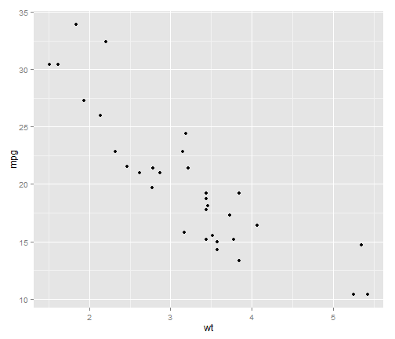

This shiny app feeds in information about a vehicle and outputs a predicted horse power (hp) value. This is based on a generalized linear model (glm) that has been trained using the mtcars data. This model will look at relationships between variables such as one plotted below, in order to suggest the correct hp.
Predicting Horsepower of a Vehicle
Coursera - Developing Data Products
Introduction
Method
The GLM will be trained to look at the linear relationships between the independent and dependent variables and calculate the best prediction for horsepower. An example of such a relationship is displayed below.

Model Information
Here is the information regarding the glm model used. As you can see there are next steps in terms of removing low regession variables but this is a starting point.
model <- glm(hp ~ mpg + cyl + disp + drat + wt + qsec + vs + am + gear + carb, data = mtcars)
summary(model)$coefficients
## Estimate Std. Error t value Pr(>|t|)
## (Intercept) 79.0483879 184.5040756 0.4284371 0.672695339
## mpg -2.0630545 2.0905650 -0.9868407 0.334955314
## cyl 8.2037204 10.0861425 0.8133655 0.425134929
## disp 0.4390024 0.1492007 2.9423609 0.007779725
## drat -4.6185488 16.0829171 -0.2871711 0.776795845
## wt -27.6600472 19.2703681 -1.4353668 0.165910518
## qsec -1.7843654 7.3639133 -0.2423121 0.810889101
## vs 25.8128774 19.8512410 1.3003156 0.207583411
## am 9.4862914 20.7599371 0.4569518 0.652397317
## gear 7.2164047 14.6160152 0.4937327 0.626619355
## carb 18.7486691 7.0287674 2.6674192 0.014412403
Shiny App
Below is a screenshot of the shiny app hosted on shinapps.io
Simply alter the values in the textboxes and the prediction will refresh automatically.